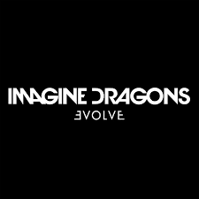

Save The Dragons is a non-profit organization established to put an end to dragon poaching. Because of years of dragon poaching, there are only five Rich-back dragons and they are near exstintion. Save The Dragrons board of directors consists of:
